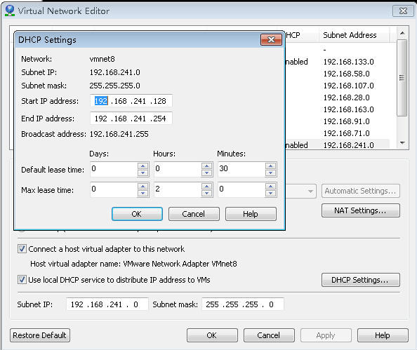

Bridging（桥接）
这种方式是最简单的只需要设置虚拟机如下图就可以进行联网了。包括虚拟机IP、网关、DNS等都不需要进行设置，宿主主机也不需要进行共享
NAT连接
第一、需要宿主主机对网络进行共享到VMware Network Adapter VMnet8 网络连接 VMware Network Adapter VMnet8的IP使用默认分配。
第二、虚拟机设置如下图
第三、设置虚拟机IP
例如VMware Network Adapter VMnet8 的IP地址为192.168.137.1 虚拟机的IP就在 192.168.137.2~192.168.137.255之间了
网关设置为192.168.137.1，子网掩码设置为255.255.255.0，DNS可以设置为192.168.137.1 后者同宿主主机的DNS相同也可以
通过 ipconfig /all可以获得宿主主机的DNS，如下图。
通过上面的设置就可以上网了
虚拟机网络设置 在Edit——》Virtual Nework Editor
VMnet0 默认使用的是桥接方式（以一台主机的方式加入局域网局域网内是互通的） VMent1使用的主机模式（Host-only） VMent8默认使用的是网络地址转换模式（NAT）。
如果虚拟机使用的是NAT模式如果自动获取IP，IP的范围取决于 DHCP Settings的的设置 这里是 128~254

默认网关在NAT Setting中设置 如果想要手动设置只要在虚拟机中设置跟下面相同即可
这样自动获取的IP可能还不能与宿住主机ping同，不用急只要对宿主主机的VMware Network Adapter VMnet8 的IP设置与上图同一网段即可对于虚拟机的网关 即可以设置为 VMware Network Adapter VMnet8的IP也可以设置为Net Setting中的网关。这样设置完以后就可以与主机ping通了但可能依然不能连接公网，我们只要对虚拟机设置下DNS就可以了 ，如何获取DNS先要保证宿主主机是能连接外网的 然后我们通过ipconfig /all获取到DNS 然后设置虚拟机中就可以连接公网了。
拓展知识
网关： 网关是一种充当转换重任的计算机系统或设备。在使用不同的通信协议、数据格式或语言，甚至体系结构完全不同的两种系统之间，网关是一个翻译器。
那么网关到底是什么呢？网关实质上是一个网络通向其他网络的IP地址。比如有网络A和网络B，网络A的IP地址范围为“192.168.1.1~192. 168.1.254”，子网掩码为255.255.255.0；网络B的IP地址范围为“192.168.2.1~192.168.2.254”，子网掩码为255.255.255.0。在没有路由器的情况下，两个网络之间是不能进行TCP/IP通信的，即使是两个网络连接在同一台交换机（或集线器）上，TCP/IP协议也会根据子网掩码（255.255.255.0）判定两个网络中的主机处在不同的网络里。而要实现这两个网络之间的通信，则必须通过网关。如果网络A中的主机发现数据包的目的主机不在本地网络中，就把数据包转发给它自己的网关，再由网关转发给网络B的网关，网络B的网关再转发给网络B的某个主机（如附图所示）。网络A向网络B转发数据包的过程。
举例说明
假设你的名字叫小不点(很小)，你住在一个大院子里，你的邻居有很多小伙伴，父母是你的网关。当你想跟院子里的某个小伙伴玩，只要你在院子里大喊一声他的名字，他听到了就会回应你，并且跑出来跟你玩。
但是你家长不允许你走出大门，你想与外界发生的一切联系，都必须由父母（网关）用电话帮助你联系。假如你想找你的同学小明聊天，小明家住在很远的另外一个院子里，他家里也有父母（小明的网关）。但是你不知道小明家的电话号码，不过你的班主任老师有一份你们班全体同学的名单和电话号码对照表，你的老师就是你的DNS服务器。于是你在家里和父母有了下面的对话：
小不点：妈妈(或爸爸),我想找班主任查一下小明的电话号码行吗？
家长：好，你等着。（接着你家长给你的班主任挂了一个电话，问清楚了小明的电话）问到了，他家的号码是211.99.99.99